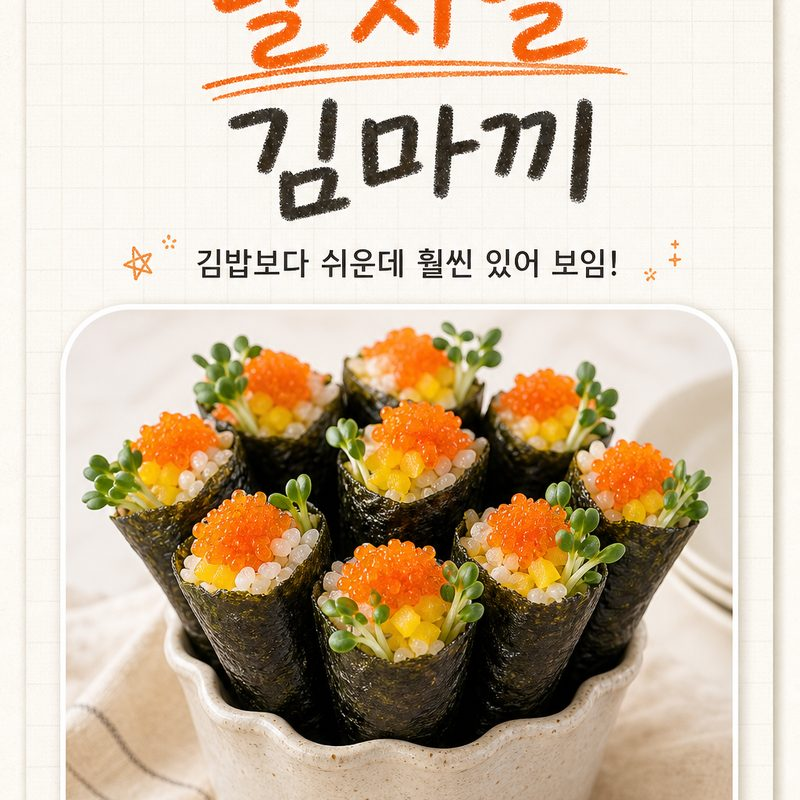

날치알 김마끼
김밥보다 쉬운데 훨씬 있어 보이는
콘 모양 김마끼예요.
손님상·도시락에 하나씩 세워 담으면 분위기 압도!

쿠팡 파트너스 활동의 일환으로, 수수료를 제공받습니다.
🔒 비밀 재료
이 레시피의 핵심 재료!
궁금하다면 아래 버튼을 눌러보세요.
함께 쓰면 좋은 재료 ↓
추가 재료 보러가기쿠팡 파트너스 활동의 일환으로, 수수료를 제공받습니다.
👨🍳 만드는 방법
재료
밥 1공기, 김 2장, 비밀재료 4큰술, 단무지 3줄, 무순 약간, 와사비 약간
🥄 양념 황금 배합
- 식초 2큰술
- 설탕 1큰술
- 소금 1/2작은술
만드는 법
- 1. 배합초 초밥
따뜻한 밥에 식초·설탕·소금 배합초를 넣고 살살 버무려 초밥을 만들어요.
- 2. 재료 손질
비밀재료은 키친타월로 물기를 꼭 빼고, 단무지는 잘게 다져요.
- 3. 초밥 펴기
김을 반 장으로 잘라 왼쪽 중앙에 초밥을 얇게 펴 발라요.
- 4. 속 올리기
와사비를 기호에 맞게 살짝 바르고 무순과 다진 단무지를 올려요.
- 5. 콘으로 말기
끝이 삼각뿔이 되도록 콘처럼 말고, 안에 비밀재료을 듬뿍 채워 그릇에 세워 담아요.
🍜 요즘요리의 한 줄 팁
밥은 한 김 식힌 따뜻한 상태여야 콘 모양이 잘 잡히고, 비밀재료은 물기를 꼭 빼야 눅눅하지 않아요.